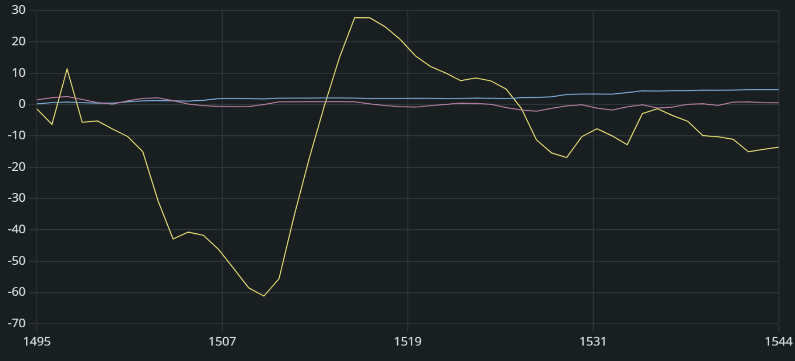
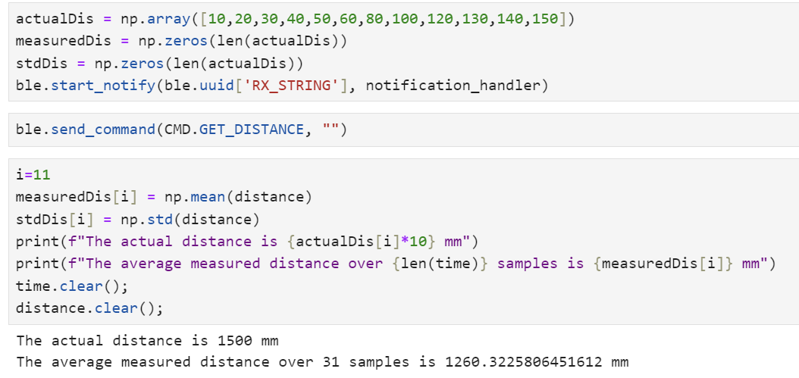
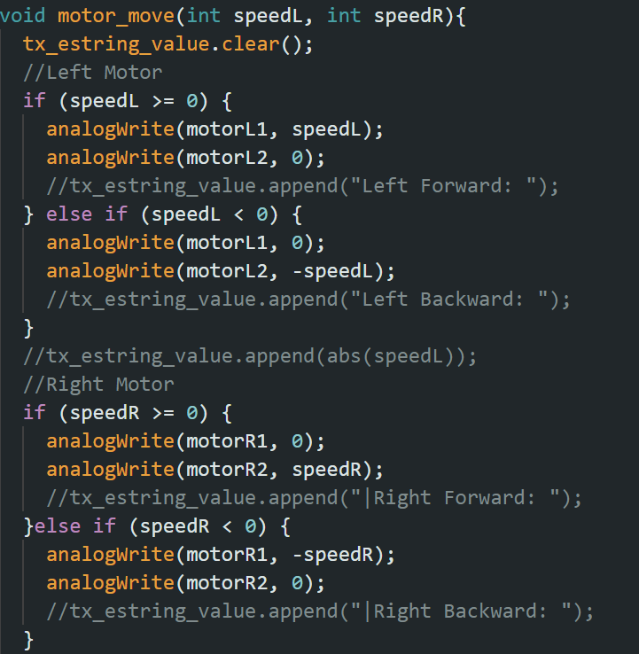
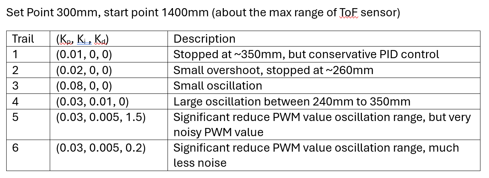
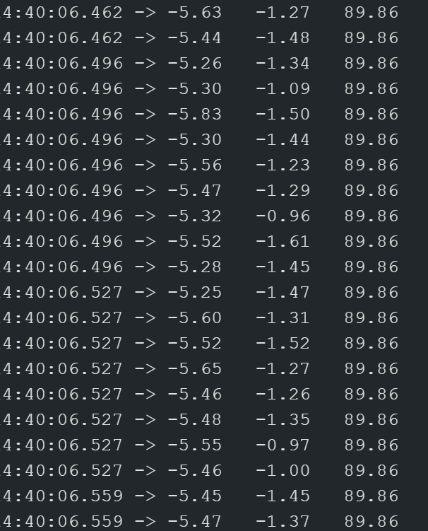
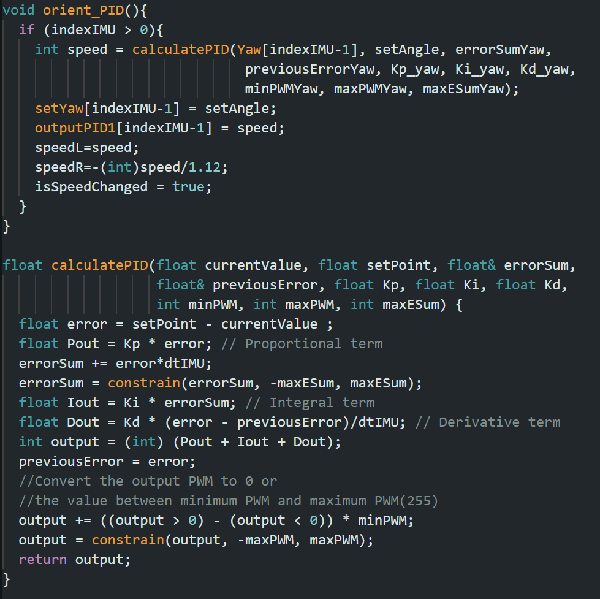
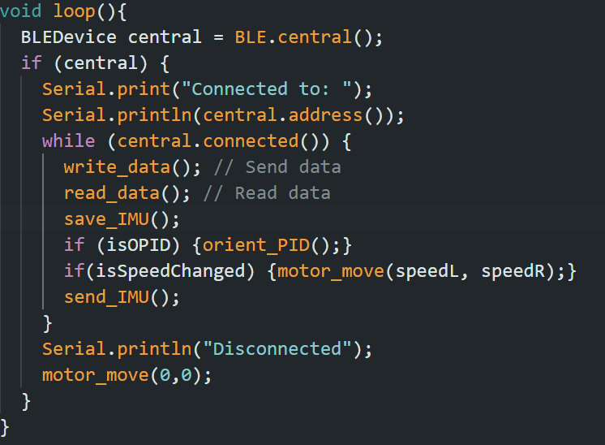
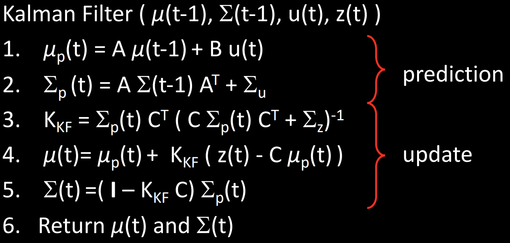

ECE 5160 - Fast Robots (2024SP)
Author: Yunxuan Xu (NetID: yx595)
About Me
I am a current M.Eng. student in ECE at Cornell Univerity. I received me B.S. in Physics and B.A. in Math from Case Western Reserve University. I am interested in semiconductor physics, nanofabrication and VLSI.
Lab 1: The Artemis board and Bluetooth
Part I: Examples on the Artemis Board
Objectives
The primary goal of this lab was to establish a foundational understanding and hands-on experience with the SparkFun RedBoard Artemis Nano through a series of tasks.
1. “Example_Blink”
In this part of the lab, the 'Blink' sketch was uploaded to the SparkFun RedBoard Artemis Nano. The onboard LED was programmed to alternate between on and off states. A shown in the video, the blinking blue LED blink with 1 second delay
2. "Example4_Serial"
In this example, we interacted with the Serial Monitor functionality in the Arduino IDE. As seen in the screenshot, the Serial Monitor first outputs a sequence of printed messages confirming the printf capability of the board. Then it allows serial communication by sending string messages to the console and echoing back any user input. When I send message “Send back: Hello”, the monitor echo back the same message.
3. "Example2_analogRead"
In this example, we will explore the Artemis Nano's temperature sensing capabilities. The temperature on the chip will be detected and printed in the second column in the Serial Monitor, as shown in the video. Initially, the temperature is about 32764 (32.764 Celsius). The temperature readings increase to ~33244 (33.244 Celsius) when a finger is placed on the chip, indicating heat transfer, and decrease to ~32900 (32.9 Celsius) when blown upon, showcasing the sensor's responsiveness to temperature variations.
4. "Example1_MicrophoneOutput"
In this part, the Example1_MicrophoneOutput script processes audio input to identify the loudest frequency component using FFT, with the results displayed in real-time via the Serial Monitor. The video dynamically showcases the microphone's ability to detect and respond to frequency changes produced by a frequency generator app. The frequency generated by the phone are 400Hz, 1000Hz and 900 Hz, while the result shows there is a bias about 7Hz.
5000 Level: LED Response to Musical 'A' Note
The task uses the microphone to detect sound frequencies and activate an LED when the musical "A" note (440 Hz) is identified. The screenshot confirms the Serial Monitor’s output, where frequencies near 440 Hz trigger a "Yes" response. A tolerance of 10 Hz accommodates minor deviations, accounting for a slight bias previously noted. The video shows the LED activation when a ~440 Hz tone is generated by a frequency generator.

Part II: Bluetooth Connection
Objectives
The objective of this part of the lab is to understand the BLE technology and its application in connecting the Artemis board to a computer. By the end of this part, we should be able to send and receive data over Bluetooth, exploring how this capability can be integrated into future labs.
Prelab
The prelab setup entailed a series of steps, including the installation of Python, setting up a virtual environment, and acquiring the ArduinoBLE library. After 'ble_arduino.ino' sketch was uploaded to the Artemis board, the Serial Monitor displayed the BLE advertisement and the board's MAC address, as shown in the screenshot. Now the computer can recognize the board as a Bluetooth device and establish a secure connection for data exchange. The codebase facilitates Bluetooth communication between the computer and the board, managing functions such as initializing the BLE connection and sending/receiving data.

BLE Configuration
The first step involved updating the 'connection.yaml' file with the MAC address obtained during the prelab. A new UUID was then generated using the “uuid4()” function to uniquely identify the BLE service and was subsequently replaced in both the 'ble_arduino.ino' and the 'connection.yaml', as shown in the first two screenshots. The purpose of changing UUIDs is to create a unique identifier for services and characteristics, which prevents conflicts with other BLE devices and ensures secure, correct pairing. The third screen shows the connetion is established in Python.


1. "ECHO" Command
Python script sends a string to the board using the "send_command" function. The Artemis, programmed with a switch-case structure in its Arduino sketch to handle various commands including "ECHO", responds by sending back a confirmation message. This round-trip communication is visually confirmed by outputs of both the Serial Monitor and Python console, as shown in the screenshots.

2. "GET_TIME_MILLIS" Command
Similarly, with the switch-case structure, the "GET_TIME_MILLIS" command is sent from the Python script to the board to retrieve the current time in milliseconds. In the Arduino code, the "millis()" function is used and the output is cast to a double data type to ensure precision in the transmitted data. The codes and outputs is shown below.

3. "notification_handler" Function
The notification_handler function is invoked automatically whenever the board sends data. It processes the incoming byte array, extracting the time data in milliseconds. This data is then converted into seconds for readability and added to an array for potential future analysis.

4. Data Transfer Rate 1
The "GET_TIME" command, records time data points 'len' times, and at the end, calculates the duration required to send 'len' data points. The last time data point sent represents the total time taken for the transmission process. The Python script then calculates the effective data transfer rate in bytes per millisecond. Integer value 'len' is user-defined in "ble.send_command(CMD.GET_TIME, len)". Increase 'len' to improve the accuracy of the transfer rate calculation.

5. "SEND_TIME_DATA" Command
In "SEND_TIME_DATA" case, the board captured timestamps and storing them in an array until the max_array=20 was reached. It then transmitted each timestamp back to the computer.


6. "GET_TEMP_READINGS" Command and "notification_handler2" Function
The "GET_TEMP_READINGS" case, each reading is acquired using "getTempDegC()" and stored with a corresponding timestamp from "millis()". The completed array is then sent back to the computer in batches. On the Python side,"" notification_handler2" is tasked with receiving this data, parsing the time and temperature values, and appending them to their respective lists.
7. Data Tranfer Rate 2
In "GET_TEMP_READINGS" command, the total process time required to store data into array and send array is calculated. This process time is stored in the last row of time_array and be sent as the last time data point. The Python script can then calculate the effective data transfer rate. As shown in the screenshot below the effective data transfer rate is ~1.041 bytes/ms, which is greater than 0.489 bytes/ms we get in task 4 “Data Transfer Rate 1”.

The faster rate of 1.041 bytes/ms comes from storing multiple readings in an array before sending, which reduces overhead and increases efficiency. Conversely, the slower rate of 0.489 bytes/ms is due to sending each reading immediately after it's taken, which includes more communication overhead for each individual transmission.
Given that doubles occupy 8 bytes and floats occupy 4 bytes, each time-temperature pair constitutes 12 bytes. Furthermore, string representations like 'T:294649.0|C:23.412' require an additional 19 bytes for ‘tx_estring_value’ before sending it. Therefore, ignoring the memory overhead, subtracting this string size from the total available memory (384 KB) and dividing by the size per data pair gives a rough estimate of how many pairs can be stored. (384000-19)/12 ≈ 31998 time-temperature pairs can be stored.
5000 Level: Effective Data Rate and Overhead
The "CALC_DATA_RATE" command in the Arduino sketch send back a specified number of 'A' characters, as a measure of the bytes of data transmitted over BLE within a certain timeframe. In Python script, data rates were calculated based on the duration taken for replies ranging from 5 bytes to 120 bytes. The observed data rates plotted against the message sizes indicate a general increase in data rate with larger packets, suggesting better efficiency with fewer packets. The sudden drop seen in the plot for the largest packet size could indicate a limit to this efficiency gain at higher data loads.

5000 Level: Reliability
By successfully sending and confirming the receipt of large data packets – 130, 140, and 150 bytes – with no loss, the computer demonstrates its ability to accurately read all data published by the Artemis board, as shown in the screenshot. This suggests high reliability in the BLE communication channel, as even when approaching the byte size limit of 151 bytes, the data integrity is maintained without any observed loss or missed information.

Dicussion
Throughout this lab, I've gained a deeper understanding of BLE communication, learning how varying data packet sizes affect transfer rates. One significant challenge was adapting the notification handler function for various data sizes, leading to the creation of "notification_handler2", capable of processing multiple data types. Implementing this handlers function for data processing is important for future labs.
Lab 2: IMU
Objectives
The objective is to deepen the understanding of integrating sensors with robotics, focusing on an Inertial Measurement Unit (IMU) and managing autonomous power via a battery. This lab aim to implement the IMU with an RC car, utilizing the sensor data to analyze a dynamic stunt.
1. Set Up the IMU
As shown in the first picture below, the IMU connected via the red cross-shaped QWIIC connectors to the Artemis board on the right.
The AD0_VAL defines the last bit of the I2C address for the IMU sensor. Here the AD0_VAL is set to 0 to initialize the sensor. The screenshot illustrates the successful compilation and output of the Example1_Basics.ino sketch.
When the IMU lies flat on the table, the plot shows overlapping x- and y-axis accelerometer readings (value 2 and 3). This overlapping is expected due to gravity's effect primarily on the z-axis in this position.
Upon rotating the IMU along the cable axis, the accelerometer data in the left plot exhibits noticeable fluctuations, indicating the accelerometer's high sensitivity to even minor movements. In contrast, the gyroscope readings in the right plot are smoother. This smoothness is expected as gyroscopes measure rotation without the influence of gravity. However, the gyroscope is subject to drift over time, which can lead to accumulating errors and a shift in the baseline.
The visual indication, blinking LED three times, is implemented after the board initialization.
2. Accelerometer
The following two pictures shows the equations and codes used to calculate the pitch and roll angles from accelerometer readings.
As shown in the two plots below, a clear pattern of change in pitch and roll angles from -90 to 0 to 90 degrees. As one angle reaches its extremities, the other angle becomes more variable. This is due to the inherent limitations of accelerometers at extreme tilt angles.
The code snippet below shows that the conversion factors of 1.038 for roll and 1.027 for pitch were obtained through a two-point calibration process, indicating the high accuracy.
The graph below is the pitch and roll data in frequency domain,suggesting that the most substantial movements picked up by the accelerometer occur below 1 Hz.
A cut-off frequency of 1 Hz is then chosen. By applying a low-pass filter, we obtain the filtered signals. The comparison between raw and filtered data indicates the high-frequency noise is filtered, resulting in smoother curves.
3. Gyroscope
The pitch, roll and yaw in degree is calculated using the codes below.
The following two plots are from the readings of gyroscope(left) and accelerometer(right) when the IMU is stationary. The left plot illustrates the inherent drift characteristic of gyroscopes.
When the IMU is randomly shaken, the gyroscope readings, represented by the blue, pink, and yellow curves, are less affected by the high-frequency noise that the accelerometer readings (green and orange) pick up.
The following two plots demonstrate that while the patterns of motion recorded by the gyroscope are similar to those of the accelerometer, there is a discrepancy in magnitude. This suggests that the gyroscope is better at capturing consistent rotational velocities but may require calibration to match the exact motion.
The curves in left plot with a 30ms delay between samples is smoother than the curves in the right plotwith a 300ms delay. Thus, a higher sample rate is important for accuracy of gyroscopic data.

Applying the complimentary filter as shown below integrates the gyroscopic and accelerometer data to correct for the gyroscope's drift and the accelerometer's high sensitivity to immediate movements. The weight of 0.1 in the complimentary filter effectively combines the stability of the gyroscope with the accelerometer's precision. As shown in the plot on the right, both low-pass filter and the complimentary filter effectively reduce the noise.
The conversion factor of 1.044 and 1.021 indicate the data's accuracy post-filtering.
4. Sample Data
In managing the IMU data collection and transmission, two flags, 'isCollectingData' and 'isSendingData', are used. The 'isCollectingData' flag toggles the reading and storage of data within the "save_IMU" function, while the 'isSendingData' flag controls the sending of stored data arrays. This system incorporates flexibility; a new incoming command from the Python can interrupt and stop the ongoing GET_IMU_DATA operation by toggling these flags. This Arduino program is designed to read and send IMU data for a certain time interval.
The following Python code processes the received data to calculate the sample rate. 310 samples are collected per second over a nearly 5-second interval.
As shown in earlier code, I decided to save the IMU data into seven separate float arrays. This approach facilitates focused troubleshooting and calibration, enabling precise adjustments per sensor. By transmitting data in discrete time steps, we can closely monitor the stream's integrity.
The choice of using float arrays is the balance between precision and memory. For IMU sensor data that requires high precision, float or double should be used. The float array satisfies the precision needed at the cost of using less memory than the double array.
The memory allocation is also carefully considered. With each data row consisting of 7 float values, each requiring 4 bytes, we allocate 28 bytes per row. An additional 88 bytes is reserved for the string ‘tx_estring_value’ that will be transmitted. The Artemis with 384KB capacity would allow to store up to (384000-88)/28≈13711 rows of data. As shown in the earlier code snippets, we've conservatively limited it to 5,000 rows within the ‘maxData’ variable. This limitation not only prevents potential memory overflow but also permits a considerable window of data collection, estimated to cover around 5000/310≈16 seconds.
Record a Stunt
The car is disassembled for future labs, so the stunt simulation is conducted manually. The battery is connected to the Artemis as shown below.
Holding the IMU, I executed movements that mimicked the anticipated actions of the car—moving it forward, backward, and rotating in place. The resulting plot captures the accelerometer's readings along the x, y, and z axes.
Lab 3
Objectives
The objective of this lab is to understand how Time of Flight (ToF) sensors operate and integrate them with the robot, enhancing its navigation capabilities. By examining the sensor's accuracy and sampling rate, we can determine the optimal speed for the robot. The lab's goal is to achieve a precise and rapid response from the sensors to enable the robot to navigate swiftly and safely.
Prelab
For the VL53L1X ToF sensor in this lab, the default I2C address is 0x52, according to its datasheet. To avoid address conflict when using two sensors on the same I2C bus, we can either programmatically change the sensor's I2C address or enable them separately via their shutdown pins. Address Changing Method allows both sensors to operate simultaneously, potentially improving data collection speed, but it requires more complex initial setup and programming to manage addresses. The Shutdown Pin Method enables only one sensor at a time, avoiding the complexity of changing sensor addresses.
According to the VL53L1X sensor's datasheet, the full field of view (FoV) is ~27 °. Optimal sensor placement on the car should cover the widest possible area to detect obstacles effectively. In this case, one sensor can be set at the front center for direct path detection, while another is placed on the left/right side to cover wider areas and detect objects not directly in the path. This setup allows for a broad detection range, covering both the immediate path and potential obstacles approaching from angles. However, obstacles directly below or above the sensors' FoV might be missed.
Given that two ToF sensors mounted on the front and side of the robot, Address Changing Method is chosen, because it allows both sensors to be active simultaneously, providing real-time data from different angles, which is crucial for effective obstacle detection and navigation. The final wiring diagram is below.
Connection
One ToF
The address shown in the serial monitor (0x29) does not match the I2C address provided in the datasheet (0x52). The address in the datasheet is written in 7-bit format, while Arduino represents it in 8-bit. The discrepancy can occur because the 7-bit address is shifted left to add the read/write bit.
The maximum range of the ToF sensor's three modes is shown in the table below. Short Mode excels in conditions with strong ambient light, offering stable performance, but at the expense of range, capping at 1.36m. Medium Mode is the compromise, providing a moderate range up to 2.9m and better performance in varied lighting than Long Mode. Long Mode allows for the greatest range in the dark, but its capability is significantly reduced under bright conditions. For a robot operating in well-lit indoor environments, Short Mode should be used due to its strong performance under ambient light.
Based on the example code located in "..\Arduino\libraries\SparkFun_VL53L1X_4m_Laser_Distance_Sensor\examples\Example_1_ReadDistance," I wrote the following function to store ToF readings in an array for later transmission via BLE. The results and sampling rate are displayed on the right screenshot. (Note: In subsequent labs, I discovered that initiating startRanging() and stopRanging() for each reading is unnecessary. Running these commands only at the start and end of data collection significantly enhances the sampling rate.)
The ToF sensor was positioned against the wall at 12 different distances as specified in the code below. For each distance, 31 readings were collected, and their mean and standard deviation were calculated.

The left plot shows the measured average distance by ToF versus actual distance, and the right plot depicts the difference between the measured and actual distances. From these plots and the printed standard deviations, it is evident that in Short Mode the maximum reliable measurement distance is approximately 1.4 meters, which agrees with the table from the data sheet.
Two ToF
As described in the prelab, the Address Changing Method was selected. The following code will change the I2C address of one ToF sensor while the other is powered off. After the address change, both ToF sensors will be activated.
The code below is tested and the resulting plot demonstrates that both sensors are functioning independently.

Below is the function designed to store ToF readings in arrays for subsequent BLE transmission. The data is also printed in Python, achieving a sample rate of 17 samples per second. The use of CheckForDataReady() in a while-loop condition significantly reduces the sample rate and limits the board's ability to perform other tasks. Additionally, as noted earlier, the unnecessary repetition of startRanging() and stopRanging() also reduces the sample rate.
5000 Level: Infrared Distance Sensors
Except for ToF sensors, two other common types of IR sensors are Triangulation-Based and Amplitude-Based. ToF sensors measure the round-trip time of light, offering high accuracy and range, independent of object properties. They perform well in various lighting conditions but are more expensive and complex to integrate. Triangulation-Based IR sensors measure distance by analyzing the angle of returned light, making them suitable for precise short-range measurements. They are complex and can struggle with transparent or reflective surfaces. Amplitude-Based IR sensors estimate distance by measuring the intensity of reflected light. They are cost-effective and simple, but their accuracy varies with object color and surface reflectivity, limiting their reliability for precise measurements.
5000 Level: ToF Sensor on Different Surafce Condition
The ToF sensor was positioned against a surface at 200mm, and 31 readings were collected under four different conditions involving variations in color and surface types. The glossy surfaces tested are those of plastic folders, and the matte surfaces are those of cloth. As shown in the table below, the measured distances are all reasonably close to 200mm, demonstrating the ToF sensor's ability to measure distances independent of object properties. However, slight variations in distance readings suggest that surface type and color might still have minor effects on measurement accuracy.
Lab 4
Objectives
The objectives of this lab are to transition from manual to open-loop control of a car using Arduino and Python, involving setting up motor drivers, controlling motors via PWM signals, and programming the car to execute predefined maneuvers autonomously.
Prelab
The pins labeled with a tilde (~) represent PWM-capable pins on the Artemis, which are suitable for motor control. According to the picture below, pins 7, 9, 11, and 12 are used.
The motors require more current, especially under load or during start-up, which is why a battery with a larger capacity of 850mAh is used for them. Conversely, the Artemis board has a lower power requirement and is effectively powered by the 650mAh battery. This arrangement helps prevent brownouts or resets on the microcontroller due to power surges from the motors. The final wiring diagram is below.
1. Motor driver hookup
The code snippet to generate PWM signals and oscilloscope hookup is shown below.
The output pins of motor driver are connected to an oscilloscope to visualize the PWM signals. Channel 1 (Yellow trace) shows the PWM signal for motorA1, with a set duty cycle of 50%. Channel 2 (Blue trace) represents motorA2, with the PWM signal turned off (0% duty cycle). The oscilloscope reading indicates the wiring is correct, and we are ready to mount the motor driver on the robot.
One of the motor driver is hooked up like the wiring diagram in prelab. The video below and corresponding code snippet showcase a simple open-loop control system applied to a robot’s wheel. The setup involves driving one wheel of the robot forward, then backward, and finally stopping.
The image shows the fully assembled robot with all critical components installed and properly wired.
2. BLE-Controlled Robotic Movement
The provided code snippet and setup allow for the control of the robot's speed and direction via commands sent from a PC to the Artemis board using BLE. The motor_move() function processes these commands to control the robot.
This video demonstrates the correct setup and operation of a robot powered by two batteries, following the wiring diagram in the prelab. Initially, the robot moves forward. Upon receiving a new MOVE command sent via BLE, the robot's wheels immediately switch direction to spin backward.
The code script controls the robot's forward motion by incrementally increasing the speed of both motors. It starts with a PWM of 32 and increases the speed by 1 unit every 2 seconds, up to a maximum of 41. A 2-second stop is implemented between each speed change to ensure the robot is stationary before initiating the next movement. The minimum PWM value required to start the car moving forward is determined to be 38. Similarly, The minimum PWM value for an on-axis turn is (110, -110). However, the car turns too slowly, and the motor driver becomes very hot due to power dissipation.
When the left and right motors have PWM values of 112 and 100, respectively, the car moves straight forward with a calibration factor of 1.12. The video below shows the robot's left wheel aligned with the seam in the wood floor Initially, and with the calibration factor of 1.12, the car's left wheel remains on the seam after traveling a long distance.
The video demonstrates a simple open-loop control system. The command to move the car forward, backward, and then stop is sent sequentially via BLE. The car executes these commands as expected.
5000 Level: analogWrite frequency
The code snippet below is used to print the delay, in milliseconds, between four analogWrite() calls, as motor control requires four separate PWM outputs. The delay is approximately 10.44 ms, which corresponds to a frequency of around 95.8 Hz. The default PWM frequency generated by analogWrite() is approximately 500 Hz. If the control delay occurs more frequently than the PWM frequency, unintended behavior can occur due to conflicting signals. In our case, the 95.8 Hz frequency is smaller, so this frequency is suitable. Configuring a higher PWM frequency can offer certain advantages, like reducing audible noise and improving motor control, particularly during low-speed operations. This is due to the smoother voltage waveform produced, which the motor can interpret more accurately.
5000 Level: Minimum PWM value in motion
Remove the 2-second stop from th previous code, add calibration factor and make the PWM with decrement of 1, as shown in code below. The car will start initially at moving, and stop at PWM values less than (34, 31), which is lower than the default minimum PWM of 38 needed to initially move the car.
Lab 5
Objectives
The objectives of this lab are to implement a linear PID control system on the robot car so that it can stop at a set distance from objects. Distance readings from the ToF sensor and PWM output by PID control, with associated timestamps, will be transmitted via BLE for analysis and optimization of the PID parameters.
Prelab
To allow for other tasks while collecting ToF data, the save_ToF() function needs to be non-blocking. The left code snippet is the older version with checkForDataReady() in the while loop, while the right one is revised with the if statement. Additionally, in older version, the redundant use of startRanging() and stopRanging() also slows down the sample rate. This code snippet stores the ToF readings in arrays for later transmission via BLE.
The left code snippet shows the send_ToF() function, which sends the saved array via BLE. Initially, both isCollectingToF and isSendingToF flags are false. When the GET_DISTANCE command is received from the PC, isCollectingToF becomes true, and the save_ToF() function records ToF readings into arrays for a limited time. Once the time limit is reached, isCollectingToF is set to false, and isSendingToF is set to true, so all stored data is sent at once. This allows us to send other commands via BLE while the Artemis reads and stores data. (Note: When the Artemis is sending saved data, it cannot respond to new commands.)
Below is the notification_handler that will save the received message from the board into arrays in Python.
1. PID implementation
First, I modified the motor_move() function to accept positive or negative PWM values. Positive PWM values spin the motor forward, while negative values spin it backward.

Second, I implemented the PID controller to calculate the PWM output for motor speed control. In the equation, the proportional term (Kp) represents the difference between the current distance and the set distance. The integral term (Ki) is the integral of the error over time, and the derivative term (Kd) is the rate of change of the error. I did not include multiplication/division of dt(time difference) in integral/dirivative term calculation, since the sampling rate is consistent for this part of the lab.
When the current distance is close to the set distance, the proportional term might not generate enough force to move the robot, causing a steady-state error. In such cases, the integral term can grow over time and eventually become strong enough to overcome the steady-state error, determining where the car will stop. To prevent integral wind-up, I used the maxESum and constrain() functions to limit the integral's growth before the car first reaches the set distance. For example, if the car takes a long time to reach the set distance for the first time, the error will remain positive for a long period. By the time the error turns negative, the integral will be a large positive number, making it unable to be negative again, and it will fail to reduce steady-state error when the proportional term is weak. Additionally, a strong integral term can cause overshoot, particularly when the proportional term is strong. Wind-up protection limits the integral term's effects and accumulation, maintaining functionality across varying strengths of the proportional term.
The derivative term add resistance to the car, which slows down the acceleration/deceleration of the car. Thus, at high acceleration/deceleration, it will have greater effect. It can reduce the overshoot while uneffect the system when the car is nearly stable or at rest.
In this code snippet below, I also added minimum and maximum PWM constraints to ensure the output remains within the appropriate range.

As shown in the left screenshot, PID calculation performs ~106 times per second, while ToF read only ~38 samples per second. Thus, we need more data point for PID calculation when no new ToF reading received.
In left code snippet below, I implement extrapolation function, which predict the current distance when ToF is not reading new data. The right plot shows a comparsion between raw ToF reading and extrapolation result.

Lastly, I added the isLPID flag and linear_PID() function to the main loop.
To access the PID control via BLE, two command are added as shown below. The two command allows me to change the Kp, Ki, Kd paramters, add wind-up protection, modify the PWM output range from PID, and adjust the set distance on PC.
2. PID Parameters Optimization
Below is the example code in Python. By sending command to the Artemis, the PID paramters can be modified and received data will be stored into arrays. minPWM is set to be 38, which is the measured minimum PWM for the car to move forward in last lab.
Heuristic procedure #2 is used to optimize the Kp, Ki and Kd. And the table below shows one iteration of my PID optimization.

Below is the plot for trail 5 in the table, although the car stops at desired position, the PWM output is noisy, indicating the Kd term might be too high. But lowing the Kd term will make the car fail to converge within 5 seconds.
The final solution is to increase Ki term significantly for fast converges, while adding a wind-up protection to limit the effect of integral term before the car get close to the set distance. Below is the comparison between with and without wind-up protection.
The video below is the final result with (Kp,Ki,Kd) = (0.05, 0.03, 0.2) and maxEsum of 100. The start distance is about 1400mm with the set distance of 300mm.
5000 Level: Wind-up protection
As descibed in ealier section, the wind-up protection is implemented by "errorSum = constrain(errorSum, -maxESum, maxESum);" For example, the final result has Ki=0.03 and maxESum of 100, so the maximum integral term magnitude is 3. When the car is far from set distance, propotional term dominates and adding 3 to PID output is not significantly effecting the speed of the car. Thus, overshoot is reduced. According to the code ealier, the propotional term magnitude will be 0 if the error is less than 1/Kp = 1/0.05 = 20mm. At this point, the integral term of 3 will lead to nonzero PID output, so the car can move and eliminate steady-state error.
A significant integral build-up occur when the control system cannot quickly reach the setpoint due to physical limitations. For example, if a car is far from the set distance and has difficulty moving fast on a carpet, the integral term will continue to increase due to the persistent error. By the time the car gets closer to the set distance, the accumulated integral could lead to overshoot or even make the system uncontrollable. Wind-up protection prevents this by limiting the integral's growth, allowing for more manageable adjustments.
Lab 6
Objectives
The objectives of this lab are to implement a PID control system on the robot car so that it can rotate to any set yaw angle or stay in place when an external force changes its yaw angle. Yaw angle will be estimated based on gyroscope readings from the IMU sensor. The estimated yaw angle and PWM output by PID control, with associated timestamps, will be transmitted via BLE for analysis and optimization of the PID parameters.
Prelab
The data transmission, similar to Lab 5, is managed by the isCollectingIMU and isSendingIMU flags, and the save_IMU() and send_IMU() functions. The only difference is that I added a processIMUData() function to convert gyroscope readings into yaw angles and store them in arrays. The gyroscope reading gz is measured in degrees per second. According to the Riemann sum method, the estimated yaw angle is the product of the time difference between gyroscope readings and gz. Yaw angle is more useful for data analysis, so gz is not stored.
However, the gyroscope reading is noisy and not centered around zero, even when the IMU is at rest. This causes the estimated yaw angle to drift over time, by about 0.5 degrees per second. The PID-controlled spin motion is performed within 2 seconds, making this drift negligible when the robot is moving. However, the drift is noticeable when the robot is stationary and requires a simple filter. I collected 55,121 gyroscope readings and wrote the following code to check the percentage of readings above or below a given threshold. For gz, less than 0.2% of the data falls outside the range of [-0.2,0.8]. By filtering gz readings in this range, the drift of the estimated yaw becomes negligible, and the estimated yaw of a moving car remains unaffected.
The final processIMUData() function with simple filter is shown in code snippet below.
I have also manually turned the car 90 degree clockwise and counter-clockwise, the result is printed below. The last columns are the yaw angle readings. 89.86 and -88.81 are close enough to 90 degree, so calibration factor is not needed.

The following code in Python shows the notificantion handler, and the plot is yaw angle degree versus time. The sample rate is 277 samples per second over 5 seconds.
1. PID implementation
The following code snippet shows the orientation_PID() and calculatePID() functions. The concept of orientation_PID() is the same as linear_PID() in Lab 5, except that distance is replaced with yaw. Compared to Lab 5, the new calculatePID() function uses the time difference between readings, dtIMU, since the IMU sample rate varies from 100 to 300 samples/s. In this case, the dt matters.

In the PID comtroller, we are taking the derivative of error, while the error is difference between integral of gz and set yaw angle. In mathematics, if signal A is the integral of signal B, then taking the derivative of signal A returns signal B. However, in PID, this aproach can help reveal the relationship between integrated error and its rate of change.
The main loop is now shown below.

The following code contains the commands that the board can receive. SET_YAW_PID allows me to change the PID parameters, and this time I added a maxPWMYAW variable. Although the gyroscope has a programmable full-scale range of ±250 dps, ±500 dps, ±1000 dps, and ±2000 dps, the yaw reading is still inaccurate when the robot turns fast but below 250 dps. The maxPWMYAW variable helps limit the maximum on-axis turn speed. I can change the set yaw angle multiple times using the SET_ANGLE command, enabling the car to turn to any angle when the orientation PID is activated. The line previousErrorYaw = 0 reset the last error for reducing the derivative kick, which a sudden spike in the derivative action caused by an abrupt change in the setpoint. The ORIENT_PID command activates the orientation PID and sets its runtime through the maxTime variable.

I did not implement a low-pass filter for the derivative term in this lab. Only when Kd is high enough, the derivative term is sensitive to noise, which can cause instability and oscillations in the system. A low-pass filter helps smooth the derivative term by reducing noise. As described in Lab 5, the derivative term adds resistance to the system, and the on-axis turn of a car with rubber wheels already provides significant resistance. Thus, I only needed a small or zero Kd value for this lab, making a low-pass filter unnecessary. After PID parameter optimization, I found that the car only needed PI orientation control, so the derivative term was not required.
2. PID Parameters Optimization
During PID optimization, I noticed that the yaw readings of left turns (180 degrees) are consistently more accurate than those of right turns. This discrepancy may be due to the car's physical setup. The image on the left shows the setting I used in Lab 4, where the IMU is placed near the left rear wheel. To address this, I moved the IMU to the car's center, as shown in the right picture. Now, the yaw readings for both left and right turns are accurate.
Heuristic procedure #2 is used to optimize the Kp, Ki and Kd. And the table below shows one iteration of my PID optimization.
Following the iteration step, I eventually got optimized PID parameters, but when I switched the set yaw angle to 180 degrees, the parameters were not working well. This caused a large overshoot and inability to converge and stop. If I set optimized PID parameters for a 180-degree turn, it takes too long for a 90-degree turn. Thus, I decided to set wind-up protection and modify the minimum turning speed first.
Previously, I had minPWM=110, which barely enabled the car to turn. I first changed the minPWM to 130, which is slightly higher to ensure the car can turn slowly while also reducing power dissipation. For wind-up protection, it is hard to observe the maxESum magnitude, but I can easily control the maximum magnitude of the integral term to add to the PID output. Thus, I set maxESum = 12/Ki, so the integral term can add only 12 to the PID at most.
Now the PID parameter optimization becomes much easier. Below is the P-controlled system for a 180-degree turn in 3 seconds. It converges quickly with minimal steady-state error.
After implement a small Ki, the PI control works well for both 90 and 180 degree turn, as shown in plots below. Since no significant overshoot is observed, I did not implement kd term.
The stationary orientation control is also tested. The code below shows the car is first turn 90 degree and stay at rest. Then I push the car counter-clockwise and clockwise respectively. The car will turn back to set yaw of 90 degree. The video below demostrate these movements.
5000 Level: Wind-up protection
The explanantion on wind-up protection is same as the lab 5. The only new discovery is to set maxESum be x/Ki, where x is the maximum PWM magnitude you want the integral term to contribute in PID output. This approach can save time for optimizing the maxESum. From the distance/yaw versus time plot, one can easily decided the x value.
Lab 7
Objectives
The objective is to implement a Kalman Filter. Parameters like drag and momentum will be estimated using the car's step response. The goal is to apply the Kalman Filter with the estimated parameters to the distance data from a linear PID-controlled system and then compare the filtered data with the extrapolated data.
1. Estimate drag and momentum
The plot below is the PWM value and distance error in Lab 5, the maximum PWM is about 100, so maximum u of 100 is picked.
With the same send_ToF() and save_ToF() functions in lab5, I program a new command GET_DISTANCE that takes three paramters, t1, t2 and maxTime. The car will stay at rest for t1 ms, then drive forward at PWM of 100 for (t2-t1) ms, and stop after maxTime ms.
The plots below shows the step response of the car at (t1, t2, maxTime) = (1000,3200,4000). The car starts moving forward around 1 second and crashes into the wall at around 2.4 seconds.
We can get the speed in mm/s by taking the derivative of distance readings respect to time. From the speed data and the plot, we found the car eventually reaches steady state speed of ~1560 mm/s, marked by the red dashed line. Then, we can get he 90% steady speed of 1404 mm/s with rising time of 1.13 seconds.
Following the equation in the left screenshot below, the code snippet on the right calculate the estimated drag and momentum at maximum PWM of 100.
2. Initialize Kalman Filter
Based on the sample rate of 10.12 samples/s, the dt is estimated. Then matrices A and B, and their discretized matrices Ad and Bd are estimated. A m*n matrix C is also determined. In this case, m=1 because there is only one type of measurement (distance to the wall), and n = 2 because there are two state variables (position and speed of the car).
In the following code snippet, I estimated Sig_u, Sig_z, and the initial guess on uncertainty matrix sigma. Sig_z represents the covariance of the measurement noise, which depends on the precision of the ToF sensor. I chose sigma_3 to be 20 mm, which is the standard deviation of the measurement noise. Sig_u represents the process noise covariance. The values of sigma_1 and sigma_2 reflect the expected uncertainty in the modeled position and speed, respectively. This uncertainty depends on the sampling rate of the system. Given a sampling rate of 1 sample per 0.1 seconds, the standard deviation of the position and speed after 1 second is estimated as sqrt(10^2/0.1) = 30 mm. Thus, both sigma_1 and sigma_2 are set to 30/1000, representing the standard deviation of the process noise for the position and speed. Now we have all paramters set for kalman filter.
3. Implement and test Kalman Filter in Jupyter
The left screenshot shows the one iteration of Kalman filter, including prediction and update steps. The function kf() in code snippet is the update step.

The plot below shows the ToF readings and extrapolation data versus time. The data are from the linear PID control system in lab 5. I will apply Kalman Filter to these data in this lab.
By apply the iteration by for loop in code snippet, the Kalman filter is running at same frequency the ToF readings. The output from Kalman filter will have same data size as raw ToF reading. The result plot is shown below.
The following to plot clearly shows that the Kalman Filter well predict the ToF readings, and this prediction is much more smoother than extrapolation and slightly smoother than raw ToF readings. In PID control, derivative term is usually sensitive to noise, the Kalman filter at this frequency might be helpful in our PID control system.
5000 Level
In order to run the Kalman filter more frequent than ToF sensor, I implement the following code. Variable dt determine the time difference between each Kalman filter prediction, so dt should be less than ToF sample rate of ~0.1 second per sample. If dt is greater than 0.1, the output will be same as previous section. New discretized matrices Ad and Bd are calculated. The while loop is added, so before the next reading is received, it will predict the distance without update step. Once new reading is received, update step will be performed.
If we implement this in the robot, we need to adjust the code slightly. The variable next_time and condition in while loop should be replace by a flag isNewToF that can tell if the new reading is received. The while loop should be replaced by the if statement, since we want the code be non-blocking. The update step can also be inside of the if statement with isNewToF flag.
The final plot below illustrates that the Kalman Filter results are noisy and less accurate compared to extrapolation. Adjusting sigma_1, sigma_2 and sigma_3 did not improve the outcomes. For a more reliable implementation of the Kalman Filter, recalculating the drag and momentum and further parameter optimizations are required. However, in the case of our robot's linear PID system, extrapolation proves to be sufficiently effective. Implementing a Kalman Filter, while beneficial in some scenarios, can be complex and time-consuming.
Lab 8
Objectives
The purpose of this lab is to integrate all previous work to perform fast stunts, showcasing the precision and speed of the robot. The robot begins at a designated line around 2 meters from the wall, accelerates forward, and initiates a 180-degree turn at the set distance of 914mm.
Overview
The concept of this lab is to combine the linear PID and orientation PID. The robot will initially be linear PID controlled. Then switch to orientation PID controlled around 914 mm away from the wall, and turn 180 degrees. Lastly, the robot will drive forward and switch to linear PID controlled again. The above action can repeat until the set maxTime reached. The car will keep switching between linear and orientation PID.
By combining the code from lab 5 and lab 6, the new main loop is shown below. The main difference is how I manage two flags, isLPID and isOPID. Since ToF readings are not useful when robot performs on-axis returns, isLPID is also controlling if the ToF is recording the distance data. But the IMU or yaw angle data will be recorded in either linear or orientation PID control. If the car is not driving straight in linear PID, when the orientation PID started, the error yaw in linear PID will also be eliminated.
1. Linear PID
In this lab, we are not required precise stop at set distance, and the drift is allowed when the car suddenly switch from driving forward to turning. The purpose of Linear PID control is just avoiding the crash onto the wall. Thus, only proportional term is needed. As shown in the code snippet below, the SET_LINEAR_PID command only takes Kp, minimum and maximum PWM speed, and set distance for future optimization. The linear_PID() function is also simplified to only P controlled, so the robot speed will decrease as it approches the set distance but won't stop. I added the if statement in linear_PID(). Once the car pass the set distance, the system will switch to orientation PID by changing the flags, and the set yaw angle increase 180 degree.
The new save_ToF() is shown below.
2. Orientation PID
The calculatePID() function calculate the PID output and convert the output to PWM value, and processIMUData() function convert the gyroscope reading gz to yaw angles. These two function remain the same as lab 5. I updated the orient_PID with two if statements. When 4 countinuous PID outputs are zero and the error yaw angle is less than 3 degrees, the robot will switch to linear PID control. In save_IMU(), I added the lastYaw variable so the first yaw reading for the orientation PID will the the last yaw reading from previous orientation PID.